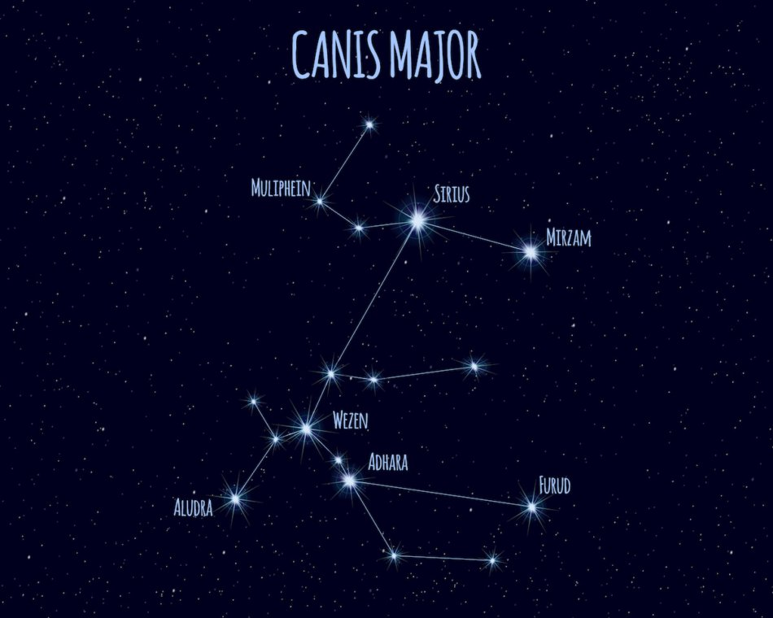

Sirius Facts
 At 8.6 light-years distance, Sirius is one of the nearest stars to us after the sun. A light-year, by the way, is nearly 6 trillion miles (9.4 trillion km)! Sirius is classified by astronomers as an “A” type star. That means it’s a much hotter star than our sun; its surface temperature is about 17,000 degrees Fahrenheit (9,400 Celsius) in contrast to our sun’s 10,000 degrees F (5,500 C). With slightly more than twice the mass of the sun and just less than twice its diameter, Sirius still puts out 26 times as much energy. It’s a main-sequence star, meaning it produces most of its energy by converting hydrogen into helium through nuclear fusion.
- Visual Magnitude: -1.46 making it the brightest star in the night sky
- DIstance: 8.6 light-years (only twi ce the distance of the nearest known star system beyond the Sun, the Alpha Centauri system)
- Radius: 1.71 times greater than the Sun
- Location: constellation Canis Major (i.e. the Dog Star)